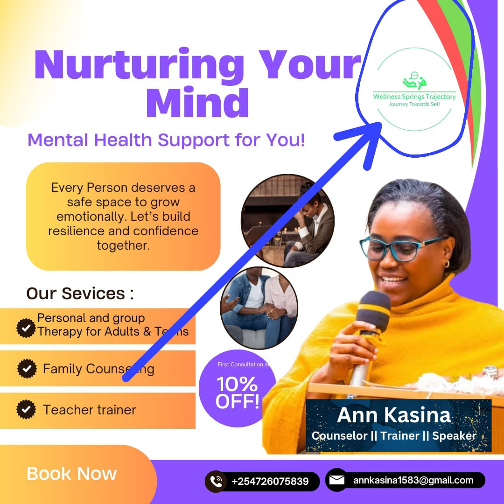

Community Work & Activities


Adult Training Sessions


Class Teaching


Outdoor Activities


Mental Health Awareness Flyers
Flora Ann Njoki Kasina is a dedicated counseling psychology practitioner committed to helping individuals, families, and students improve their mental health and emotional wellbeing. With a compassionate and professional approach, she works closely with clients to understand their unique challenges and guide them toward positive personal growth. Her work focuses on creating a safe, supportive, and confidential environment where clients can openly express their thoughts, feelings, and concerns. Flora believes that mental wellness is an essential part of living a balanced and fulfilling life. Through evidence-based counseling techniques and empathetic listening, she supports clients in overcoming challenges such as stress, anxiety, relationship conflicts, emotional distress, and life transitions. Her goal is to empower individuals with practical coping strategies, improved self-awareness, and the confidence needed to navigate life’s difficulties. In addition to individual therapy, Flora works with families and groups to strengthen communication, rebuild trust, and promote healthier relationships. She is also passionate about mental health education and regularly participates in training programs, workshops, and community outreach initiatives that raise awareness about psychological wellbeing. Flora’s mission is to promote emotional resilience, personal development, and healthier communities by providing accessible, professional, and compassionate psychological support to those in need.
Individual counseling provides a safe, confidential space where clients can openly discuss personal challenges, emotions, and life experiences. Through one-on-one sessions, individuals receive professional support to better understand their thoughts, feelings, and behaviors. Counseling can help address issues such as stress, anxiety, depression, trauma, relationship concerns, and personal development. The goal is to empower clients with practical coping strategies, emotional awareness, and problem-solving skills that promote mental wellness and resilience.
Family counseling focuses on strengthening relationships and improving communication among family members. It helps families address conflicts, misunderstandings, and emotional struggles that may affect the overall wellbeing of the household. Through guided discussions and therapeutic techniques, family members learn to understand each other's perspectives, resolve disagreements constructively, and build stronger emotional connections. This type of counseling is particularly helpful during major life transitions, parenting challenges, or periods of conflict. The aim is to create a supportive and respectful family environment that promotes healthy relationships and emotional stability.
Addiction counseling supports individuals who are struggling with substance use or behavioral addictions. It focuses on understanding the root causes of addiction and helping clients develop effective strategies for recovery and relapse prevention. Through professional guidance, individuals learn healthier coping mechanisms, emotional regulation, and ways to rebuild their lives. Counseling may also involve identifying triggers, strengthening personal motivation for change, and building supportive networks. The overall goal is to help individuals regain control of their lives, maintain long-term recovery, and improve their physical, emotional, and social wellbeing.
Adult Training Sessions
Class Teaching
Outdoor Activities

Mental Health Awareness Flyers
Phone: +254 726 075 839
mailto:annkasina1583@gmail.com